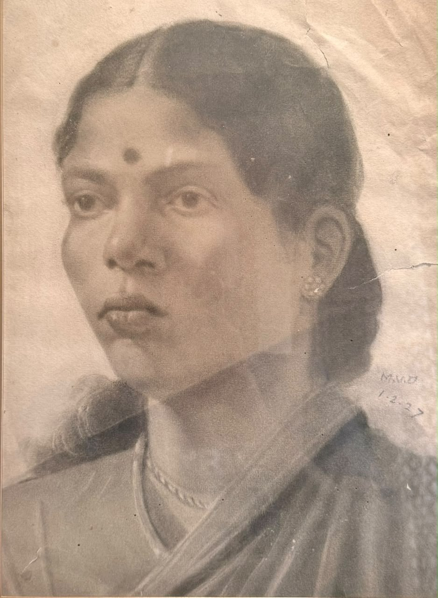
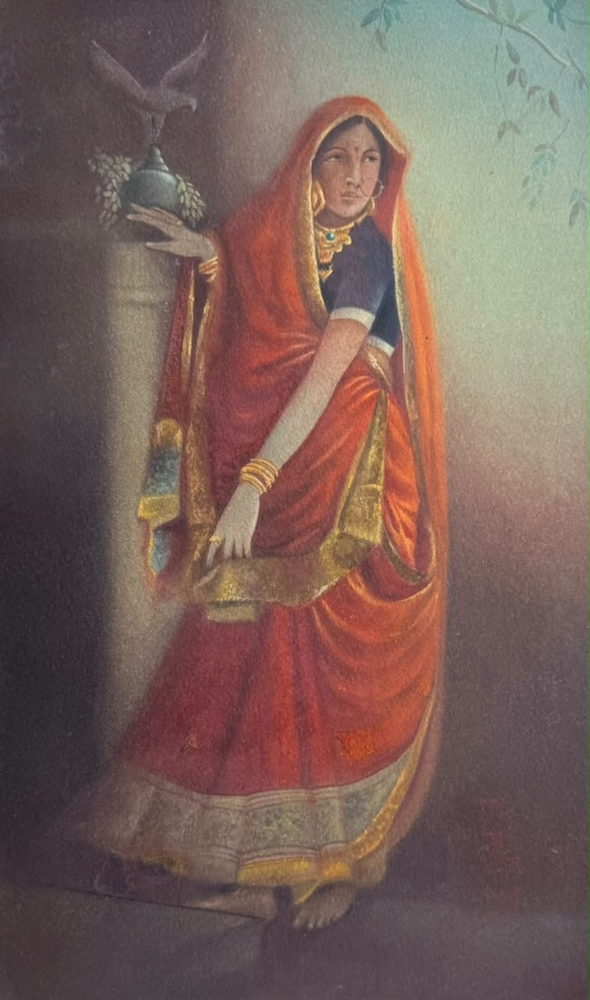
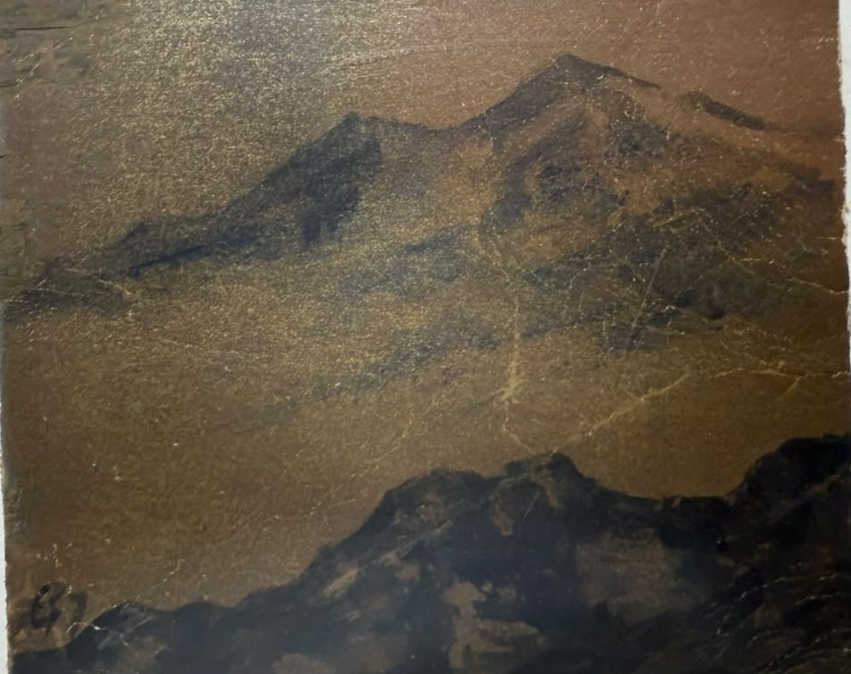
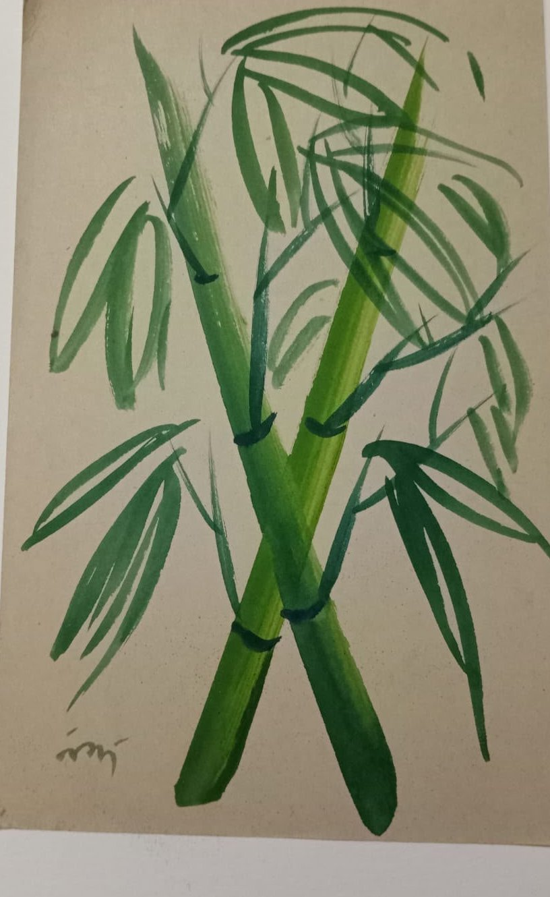
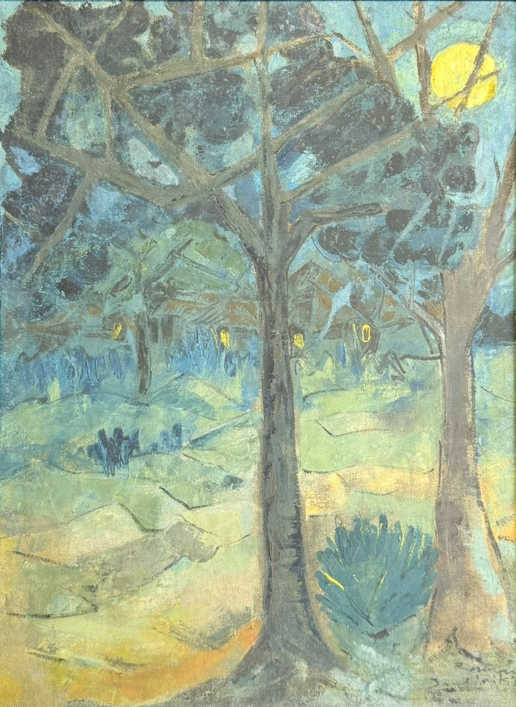
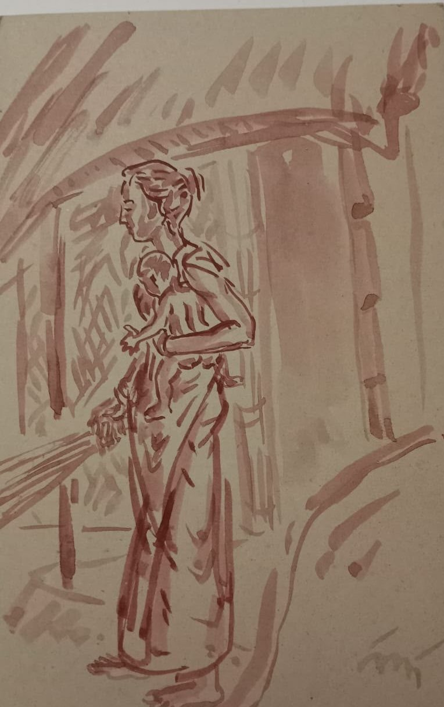
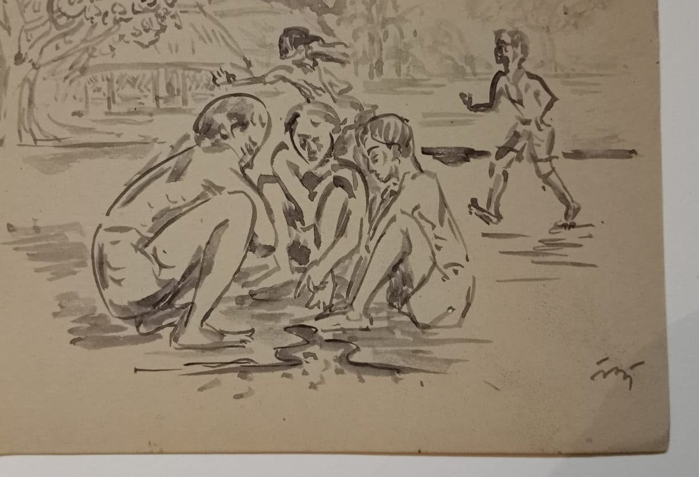
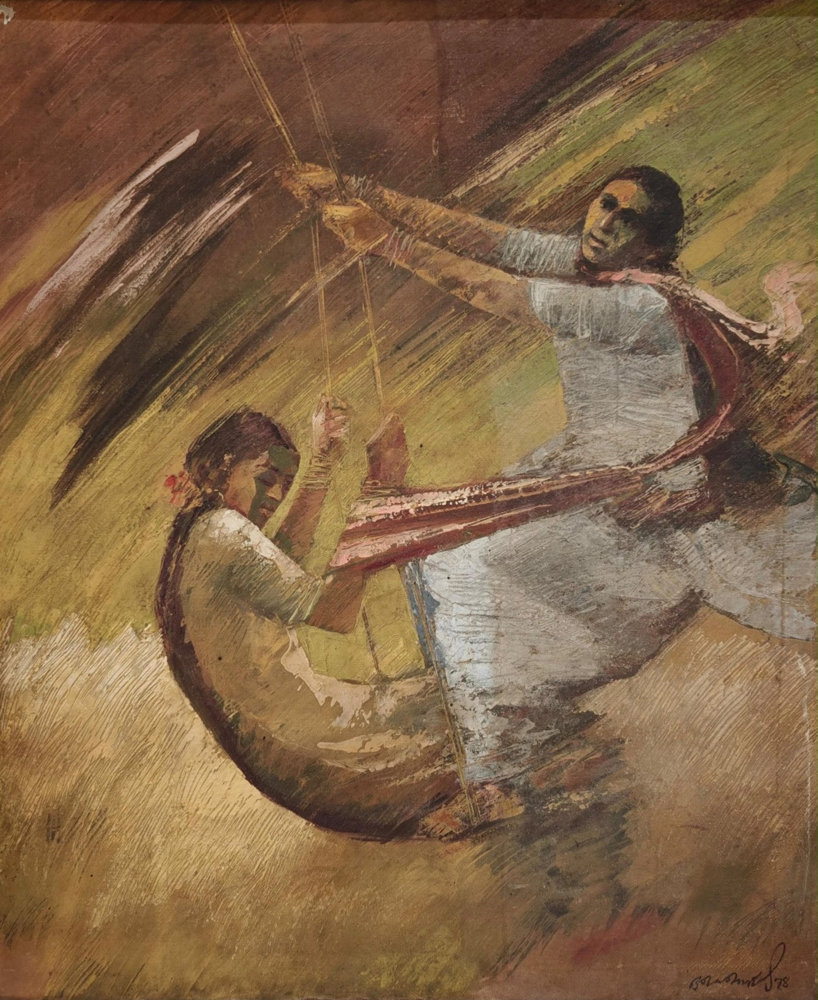

The masters
The people who made it
Three Tagores in a Calcutta house, a teacher who stayed under the trees, and the students who carried his way of seeing into the open air. These are the artists this house is devoted to.

Poet, teacher, painter
Rabindranath Tagore
1861–1941
He founded the school at Santiniketan in 1901 and Visva-Bharati in 1921, and gave Kala Bhavana its belief that art belongs to everyday life.
Then, in his late sixties, he began to paint. The pictures grew out of the crossings-out in his manuscripts: faces, creatures and dark landscapes unlike anything else in Indian art. He left more than two thousand of them. His work is a national art treasure and cannot leave India.

Founder of the Bengal School
Abanindranath Tagore
1871–1951
Rabindranath's nephew, and the painter who turned Indian art back toward its own traditions with Bharat Mata in 1905.
He worked in a soft, layered wash, learning from Mughal and Rajput painting and from the Japanese artists visiting Calcutta. He taught a whole generation, Nandalal Bose among them, and wrote stories for children that are still read in Bengal today. His work is a national art treasure.
See his two works in the house
The one who went his own way
Gaganendranath Tagore
1867–1938
Abanindranath's elder brother, and the sharpest eye in the family.
He drew biting caricatures of Calcutta society, then made paintings of rooms and stairways broken into planes of light and shadow, borrowing from cubism a generation before most Indian painters looked that way. His work is a national art treasure.
See his two works in the house
The teacher of Kala Bhavana
Nandalal Bose
1882–1966
Abanindranath's student, and for thirty years the heart of Kala Bhavana. He taught Santiniketan to draw from life, learn from craftsmen and paint for everyone.
Read his full story See his works in the house
Sculptor of the open air
Ramkinkar Baij
1906–1980
He came to Santiniketan from Bankura in 1925 and made the campus his gallery.
Working with cement and the red laterite under his feet, he made life-size figures of the Santhal people around him and set them out under the sky: Sujata, Santhal Family, Mill Call. He painted with the same energy, in oil and watercolour, and taught at Kala Bhavana for decades.
See his seventeen works in the house
Muralist
Benode Behari Mukherjee
1904–1980
One of Kala Bhavana's first students, who covered the walls of Hindi Bhavana with the medieval saints of India in 1946 and 1947.
In 1957 an operation left him blind. He kept working, with paper cut-outs, drawings and even murals, guided by memory and touch. Satyajit Ray, once his student, made a film about him, The Inner Eye, in 1972.

Printmaker
Ramendranath Chakravorty
1902–1955
Nandalal's student, and a printmaker known for his woodcuts, linocuts and etchings.
His prints of Bengal's villages, rivers and temples carried Santiniketan's way of seeing into a medium anyone could own. In 1949 he became principal of the Government School of Art in Calcutta, where the whole story had begun.

The lesson carried forward
K. G. Subramanyan
1924–2016
He came from Kerala to study under Nandalal, Benode Behari and Ramkinkar in the 1940s.
He went on to teach for decades at Baroda, and later returned to Santiniketan. Painter, muralist, toy-maker and writer, he is one of the clearest proofs that Kala Bhavana's teaching never stopped travelling.
The masters at the house
See their work in person
Every work we show comes with its wall label and its story. If your family has kept a work by one of these artists, we would be honoured to learn about it.